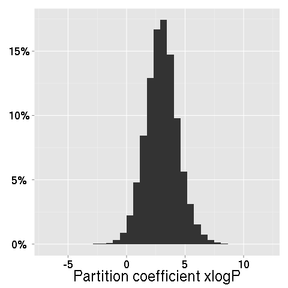
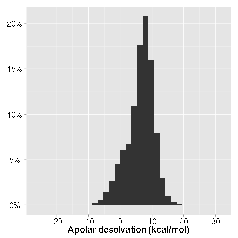
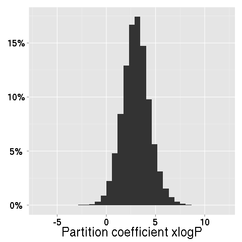
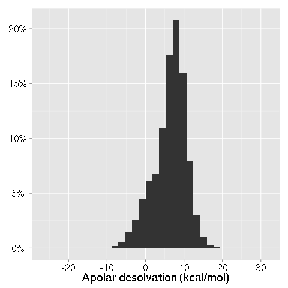

a multithreaded virtual screening tool for flexible ligand docking
The input to idock is threefold:
Our workstations execute idock 2.1 and perform two-phase docking:
As result, you can download:
 phase1.csv.gz: the predicted free energy, RF-Score, and 9 molecular properties of the selected ligands produced in phase 1.phase2.csv.gz: the predicted free energy, RF-Score, and 9 molecular properties, as well as link to substance information and supplier list of the top 1000 ligands produced in phase 2.
phase1.csv.gz: the predicted free energy, RF-Score, and 9 molecular properties of the selected ligands produced in phase 1.phase2.csv.gz: the predicted free energy, RF-Score, and 9 molecular properties, as well as link to substance information and supplier list of the top 1000 ligands produced in phase 2. hits.pdbqt.gz: the predicted conformations of the top 1000 ligands produced in phase 2.
hits.pdbqt.gz: the predicted conformations of the top 1000 ligands produced in phase 2.Number of ligands satisfying all the 9 filtering conditions: 1,107
12,171,187 ligands are collected from version 2012-04-06 of the All Clean subset of ZINC and converted into PDBQT format. We thank Professor John J. Irwin, the developer and maintainer of ZINC, for granting us permission to use ZINC with three conditions:
Here are the distributions of 9 molecular properties of the ligands:
 



RF-Score is a machine learning approach to predicting protein–ligand binding affinity. It has been integrated into the idock daemon as an alternative option for rescoring predicted conformations. RF-Score is licensed under CC BY-SA 3.0. We thank Dr. Pedro J. Ballester for sharing with us the code and documentation of RF-Score.
Pedro J. Ballester and John B. O. Mitchell. A machine learning approach to predicting protein-ligand binding affinity with applications to molecular docking. Bioinformatics, 26(9):1169–1175,2010. DOI: 10.1093/bioinformatics/btq112
Download a receptor at PDB. Take HIV-1 reverse transcriptase (2ZD1) as an example.

Retain only the "ATOM" or "HETATM" records of necessary chain(s) where the binding site of interest resides. In 2ZD1.pdb, the ligand TMC278 binds at the allosteric site, which resides in chain A. Chain A atoms start at line 613 and end at line 5118 with the "TER" record. Save lines 613 - 5118 to a new file 2ZD1rec.pdb.
Download MGLTools at http://mgltools.scripps.edu/downloads and install it.
Use the prepare_receptor4.py script to convert a receptor into PDBQT format.
-r 2ZD1rec.pdb option specifies a receptor for input.-o 2ZD1rec.pdbqt option specifies a receptor for output.-A hydrogens option adds both polar and non-polar hydrogens.-U lps_water_deleteAltB option removes lone pairs, water residues, and XX@B atoms.On Windows
cd C:\Program Files (x86)\MGLTools-1.5.6rc3 python Lib\site-packages\AutoDockTools\Utilities24\prepare_receptor4.py -r 2ZD1rec.pdb -o 2ZD1rec.pdbqt -A hydrogens -U lps_waters_deleteAltB
On Linux
cd ~/mgltools_x86_64Linux2_1.5.6rc3 pythonsh MGLToolsPckgs\AutoDockTools\Utilities24\prepare_receptor4.py -r 2ZD1rec.pdb -o 2ZD1rec.pdbqt -A hydrogens -U lps_waters_deleteAltB
Copy the content of 2ZD1rec.pdbqt and paste it into Receptor in PDBQT
A binding site can be defined by:
Save the ligand TMC278 (lines 8533 - 8560) to a new file 2ZD1lig.pdb.
Use the prepare_ligand4.py script to convert a ligand into PDBQT format.
-l 2ZD1lig.pdb option specifies a ligand for input.-o 2ZD1lig.pdbqt option specifies a ligand for output.-A hydrogens option adds both polar and non-polar hydrogens.-U '' option removes nothing, i.e. retains lone pairs and non-polar hydrogens.On Windows
cd C:\Program Files (x86)\MGLTools-1.5.6rc3 python Lib\site-packages\AutoDockTools\Utilities24\prepare_ligand4.py -l 2ZD1lig.pdb -o 2ZD1lig.pdbqt -A hydrogens -U ''
On Linux
cd ~/mgltools_x86_64Linux2_1.5.6rc3 pythonsh MGLToolsPckgs\AutoDockTools\Utilities24\prepare_ligand4.py -l 2ZD1lig.pdb -o 2ZD1lig.pdbqt -A hydrogens -U ''
Run AutoDockTools, which is a component of MGLTools. From the menu of ADT4.2
2ZD1rec.pdbqt. Ignore all the warnings about charge, because idock ignores charge.2ZD1lig.pdbqt.
The "Grid Options" dialog pops out.
Paste the corresponding values into center_x, center_y, center_z, size_x, size_y, size_z.
Download Chimera at http://www.cgl.ucsf.edu/chimera/download.html#daily and install it. Note that the AutoDock Vina plugin is only available in daily builds. It is not available in Chimera 1.6.2 or earlier versions.
File -> Fetch by ID. By default PDB is chosen. Enter 2ZD1 and click Fetch.
Tools -> Surface/Binding Analysis -> AutoDock Vina. Check "Resize search volume using". Use button 2 to manually adjust the grid box.
Download PyMOL at http://pymol.org and install it. An educational version is available at no cost for educational use only.
Download the AutoDock plugin at https://github.com/Pymol-Scripts/Pymol-script-repo/raw/master/plugins/autodock_plugin.py
Plugin -> Manage Plugins -> Install... -> Choose autodock_plugin.py. Restart PyMOL. Note that the AutoDock plugin can only be installed by PyMOL 1.2r1. It is not supported by PyMOL 1.3r1 or later versions.
Plugin -> PDB Loader Service -> Enter 2ZD1. Plugin -> Autodock/Vina -> Grid Settings. Set Spacing to 1. Manually adjust X-, Y-, Z-points and Grid Center Coordinates.
Hongjian Li, Kwong-Sak Leung, and Man-Hon Wong. idock: A Multithreaded Virtual Screening Tool for Flexible Ligand Docking. 2012 IEEE Symposium on Computational Intelligence in Bioinformatics and Computational Biology (CIBCB), pp.77-84, San Diego, United States, 9-12 May 2012. DOI: 10.1109/CIBCB.2012.6217214